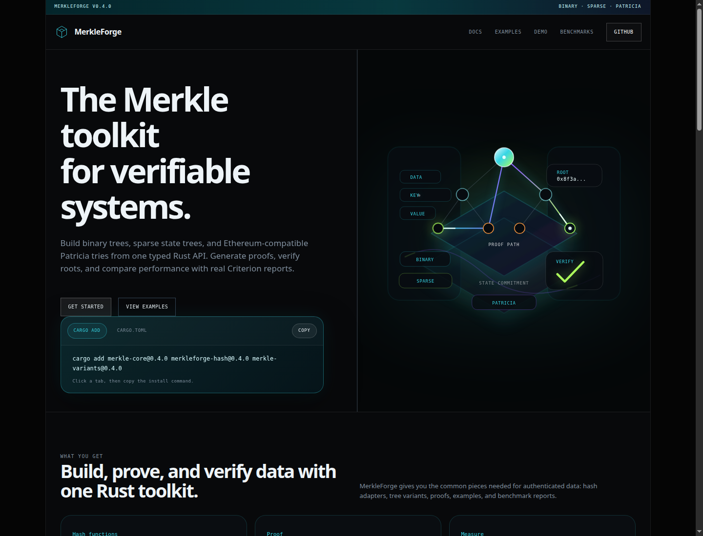
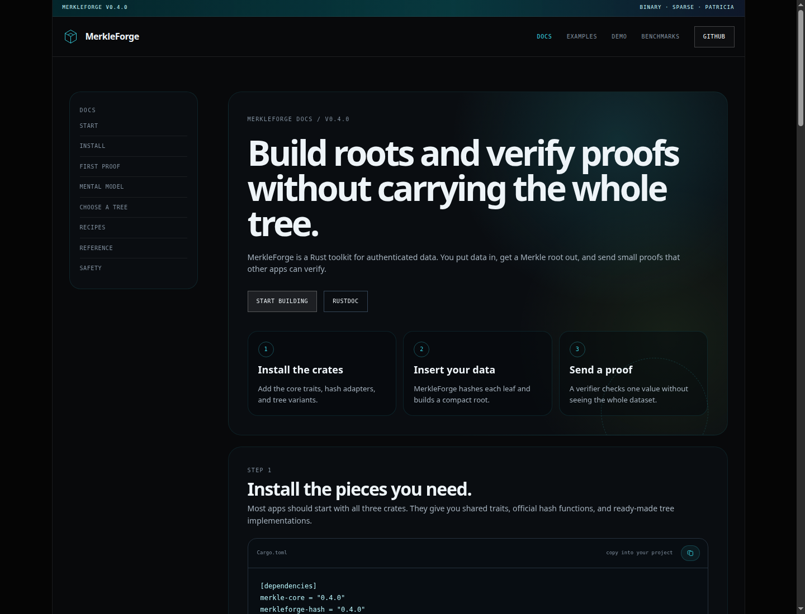
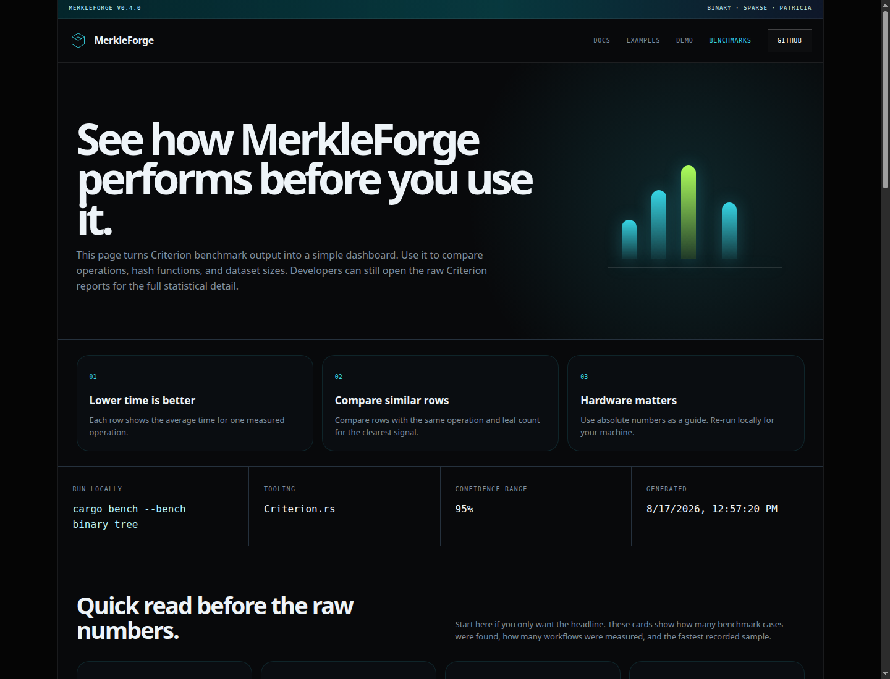
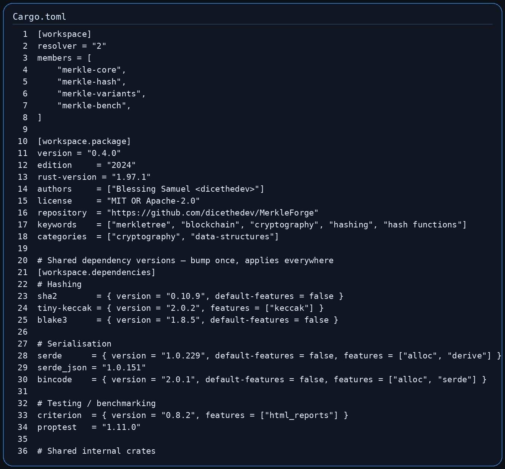
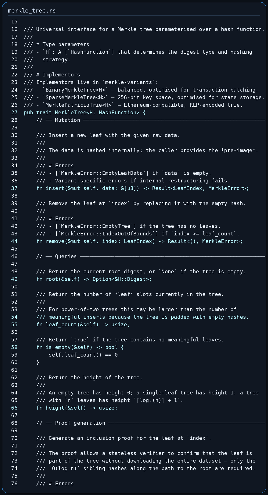
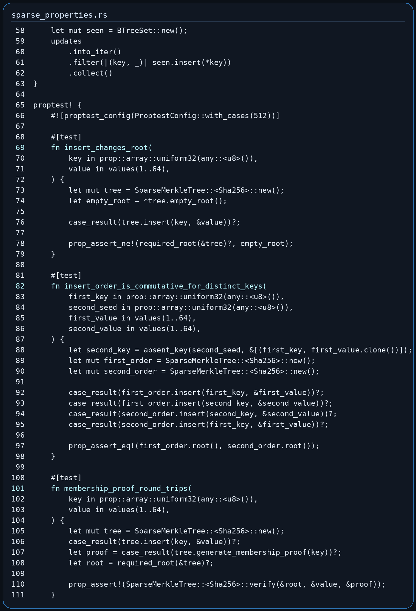
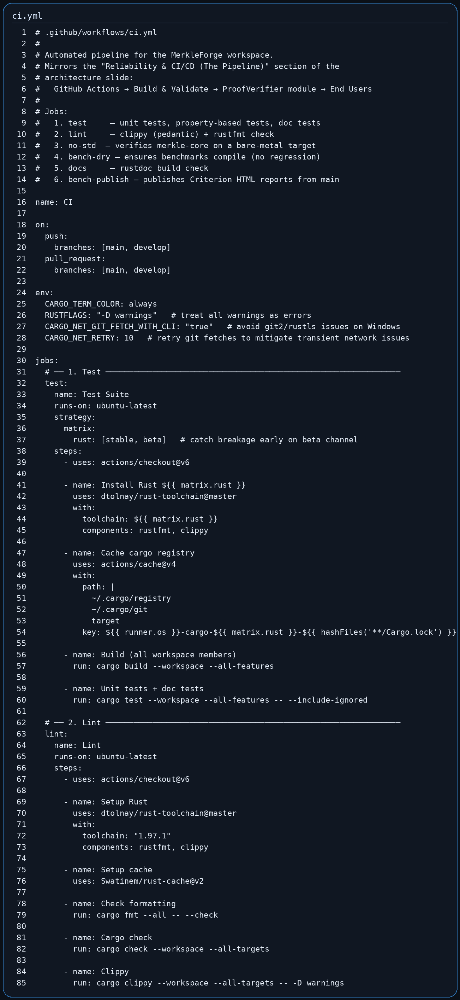

MerkleForge was developed as a high-performance Rust toolkit for building and testing Merkle-based verification systems. The system addresses the need for a single, reusable library that supports multiple authenticated data structures instead of forcing developers to combine separate libraries for binary Merkle trees, sparse Merkle trees, and Ethereum-compatible Patricia tries.
The development process followed an incremental phase-based approach:
| Phase | Development Focus | Outcome |
|---|---|---|
| Phase 1 | Core infrastructure | Shared traits, proof types, errors, serialization, hash adapters, CI setup |
| Phase 2 | Binary Merkle Tree | Flat-array binary tree, insertion/removal, proof generation, proof verification, property tests, benchmarks |
| Phase 3 | Sparse Merkle Tree | 256-bit sparse tree, empty-hash cache, key-addressed updates, membership/non-membership proofs, shortcut nodes, batching, batch updates |
| Phase 4 | Merkle Patricia Trie | Ethereum-compatible nibble paths, RLP/HP encoding, node hashing, insert/get/remove, proof generation, Ethereum test vectors |
| Phase 5 | Benchmarking and evaluation | Criterion benchmark suite, comparative benchmarks, energy-aware benchmark notes, public benchmark documentation |
| Phase 6 | Documentation and publication | Crate READMEs, website, live demo, release automation, user-facing documentation |
The system was designed around four main goals:
MerkleTree<H> interface for different tree variants.The workspace is divided into focused crates so each part has a clear responsibility:
MerkleForge/
├── merkle-core/ # Shared traits, errors, proof types, metadata
├── merkle-hash/ # SHA-256, Keccak-256, and BLAKE3 hash adapters
├── merkle-variants/ # Binary, sparse, and Patricia tree implementations
├── merkle-bench/ # Criterion benchmark suite and comparison benchmarks
├── website/ # React + TypeScript documentation and demo website
├── benchmarks/ # Energy benchmark documentation
├── profiling/ # Flamegraph and profiling documentation
└── .github/workflows/ # CI, release, website, and benchmark publishing flows
The diagram below summarizes the logical flow of the system.
flowchart LR
User["Developer or light client"] --> API["MerkleForge public API"]
API --> Core["merkle-core traits and proof types"]
API --> Hash["merkleforge-hash adapters"]
API --> Variants["merkle-variants tree implementations"]
Variants --> Binary["BinaryMerkleTree"]
Variants --> Sparse["SparseMerkleTree"]
Variants --> Patricia["MerklePatriciaTrie"]
Variants --> Proofs["Proof generation"]
Proofs --> Verify["Stateless verification"]
Hash --> Bench["merkle-bench Criterion suite"]
Variants --> Bench
Bench --> Website["GitHub Pages benchmark dashboard"]
The system was implemented in Rust using a workspace layout. Rust was selected because it provides strong memory safety, deterministic performance, zero-cost abstractions, and good support for cryptographic and systems-level code.
At the implementation level, MerkleForge is composed of the following modules.
merkle-core: Shared FoundationThe merkle-core crate contains the shared interfaces and types used across
the whole project. It does not implement any concrete tree. Instead, it defines
the contracts that all tree variants follow.
Main responsibilities:
HashFunction trait for pluggable cryptographic algorithms.MerkleTree trait for shared tree operations.ProofVerifier trait for stateless proof verification.Serializable trait for proof and metadata encoding.MerkleError for consistent error reporting.LeafIndex, NodeIndex, MerkleProof, ProofNode, ProofSide, and
TreeMetadata types.Important codebase screenshots to include:
| Figure | Codebase Area | File |
|---|---|---|
| Figure 4.1 | Shared Merkle tree trait | merkle-core/src/traits/merkle_tree.rs |
| Figure 4.2 | Hash function contract | merkle-core/src/traits/hash_function.rs |
| Figure 4.3 | Common proof types | merkle-core/src/types/common.rs |
merkleforge-hash: Hash Adapter LayerThe merkleforge-hash crate implements three hash adapters:
| Adapter | Algorithm | Main Use |
|---|---|---|
Sha256 |
SHA-256 | General-purpose binary and sparse trees |
Keccak256 |
Keccak-256 | Ethereum-compatible Patricia trie roots |
Blake3 |
BLAKE3 | High-throughput non-Ethereum workloads |
All adapters implement the same HashFunction trait. This means developers can
switch algorithms by changing only the tree type parameter:
use merkle_variants::BinaryMerkleTree;
use merkleforge_hash::{Blake3, Sha256};
let sha_tree = BinaryMerkleTree::<Sha256>::new();
let blake_tree = BinaryMerkleTree::<Blake3>::new();
The hash layer also applies domain separation. Leaf hashes and internal node hashes are kept separate so an attacker cannot substitute an internal node as a leaf value.
merkle-variants: Tree ImplementationsThe merkle-variants crate contains the concrete data structures.
BinaryMerkleTree<H> is optimized for ordered datasets such as transaction
batches, logs, and file chunks. It uses flat array storage and computes parent
nodes bottom-up. It supports:
MerkleTree<H> implementation.SparseMerkleTree<H> is designed for very large key spaces where most entries
are empty. It supports a fixed 256-bit key space and avoids storing empty
branches.
Implemented sparse tree optimizations:
MerklePatriciaTrie<H> implements an Ethereum-compatible trie. It uses
4-bit nibble paths and supports the four standard MPT node types:
Implemented Patricia trie functionality:
merkle-bench: Benchmarking LayerThe benchmark crate isolates performance testing from the runtime crates. It contains Criterion benchmarks for:
rs-merkle and merkle_light.The results are summarized in BENCHMARKS.md and published through the website
benchmark dashboard.
The website was implemented with React, TypeScript, and Vite. It provides:
The following screenshots were captured from the local website build.



The following screenshots show selected parts of the implementation and CI configuration used during system development.




Recommended codebase screenshots to include in the final report:
| Figure | Screenshot Content | Suggested File |
|---|---|---|
| Figure 4.8 | Workspace manifest and shared dependency versions | Cargo.toml |
| Figure 4.9 | MerkleTree and ProofVerifier trait definitions |
merkle-core/src/traits/merkle_tree.rs |
| Figure 4.10 | Binary tree proof generation implementation | merkle-variants/src/binary.rs |
| Figure 4.11 | Sparse tree membership/non-membership proof tests | merkle-variants/tests/sparse_properties.rs |
| Figure 4.12 | Patricia trie Ethereum vector test | merkle-variants/tests/patricia_ethereum_vectors.rs |
| Figure 4.13 | CI workflow for test, lint, docs, no_std, and benchmark checks | .github/workflows/ci.yml |
Testing was performed at several levels to ensure that the system works correctly both as individual modules and as an integrated workspace.
Unit tests were used to test individual functions, data structures, and error
conditions. These tests are located mainly inside the Rust source files under
merkle-core, merkle-hash, and merkle-variants.
Examples of unit-tested behavior:
Local result:
cargo test --workspace
merkle-core: 15 passed
merkleforge-hash: 21 passed
merkle-variants unit tests: 105 passed
Integration tests verify combined modules working together. These tests are
stored under merkle-variants/tests/.
Integration coverage includes:
binary_trait_contract.rs: verifies that binary trees satisfy the shared
MerkleTree<H> contract across SHA-256, Keccak-256, and BLAKE3.binary_properties.rs: verifies binary tree root sensitivity, proof
correctness, tamper detection, and serialization.sparse_properties.rs: verifies sparse tree insert/remove behavior,
membership proofs, non-membership proofs, batch-vs-sequential equivalence,
and proof serialization.patricia_properties.rs: verifies Patricia trie insertion, removal,
canonical root behavior, proof verification, and RLP round-trips.patricia_ethereum_vectors.rs: validates Patricia trie root output against
official Ethereum trie test vectors.Local integration result:
binary_properties: 6 passed
binary_trait_contract: 3 passed
patricia_ethereum_vectors: 3 passed
patricia_properties: 9 passed
sparse_properties: 7 passed
doc tests: 2 passed, 5 ignored
Property-based tests were implemented with Proptest. Instead of testing only a few fixed examples, Proptest generates many random inputs and checks that the system invariants always hold.
Important properties tested:
User Acceptance Testing focused on whether the project could be used by a developer or evaluator without needing to understand the entire internal codebase.
UAT activities:
| User Task | Acceptance Observation |
|---|---|
| Install the crates from the README | Dependency block is copyable and uses published 0.4 versions |
| Generate a binary tree proof | Quick-start example compiles and shows proof verification |
| View project documentation | Website documentation page explains installation, proofs, variants, recipes, and safety notes |
| Run a live proof demo | Website demo allows editing transactions and verifying a selected row in the browser |
| Inspect benchmark results | Benchmark page and BENCHMARKS.md explain latency, throughput, proof size, and comparison data |
| Verify CI quality | GitHub Actions runs test, lint, docs, no_std check, and benchmark compile checks |
| Test Case ID | Test Case | Expected Result | Actual Result | Status |
|---|---|---|---|---|
| TC-01 | Create a new BinaryMerkleTree<Sha256> |
Tree is empty and root is None |
New tree reports empty | Pass |
| TC-02 | Insert non-empty leaf into binary tree | Leaf count increases and root is created | Root generated successfully | Pass |
| TC-03 | Insert empty leaf data | Operation returns MerkleError::EmptyLeafData |
Error returned without mutation | Pass |
| TC-04 | Generate proof for valid binary leaf | Proof verifies against root and leaf data | Proof verified successfully | Pass |
| TC-05 | Tamper proof sibling hash | Verification returns false |
Tampered proof failed verification | Pass |
| TC-06 | Remove leaf from binary tree | Leaf is removed and root updates | Removal succeeded and stale proof failed | Pass |
| TC-07 | Create new sparse tree | Root equals precomputed empty sparse root | Empty root cache used | Pass |
| TC-08 | Sparse insert by 256-bit key | Root changes and leaf count increments | Root changed and leaf stored | Pass |
| TC-09 | Sparse non-membership proof for absent key | Proof verifies absence against root | Non-membership proof verified | Pass |
| TC-10 | Sparse batch insert vs sequential insert | Both methods produce same root | Roots matched | Pass |
| TC-11 | Sparse proof serialization round-trip | Serialized/deserialized proof verifies identically | Round-trip proof remained valid | Pass |
| TC-12 | Create new Patricia trie | Trie is empty and root is None |
Empty trie initialized correctly | Pass |
| TC-13 | Patricia insert then get | Retrieved value equals inserted value | Value retrieved successfully | Pass |
| TC-14 | Patricia remove then get | Removed key returns None |
Key removed successfully | Pass |
| TC-15 | Patricia RLP round-trip | rlp_decode(rlp_encode(node)) == node |
Round-trip succeeded | Pass |
| TC-16 | Empty Patricia root | Root equals Ethereum empty trie hash | Matched known Ethereum root | Pass |
| TC-17 | Official Ethereum trie vectors | Computed roots match expected roots | All vector cases passed | Pass |
| TC-18 | Hash adapter determinism | Same input produces same digest | Deterministic output confirmed | Pass |
| TC-19 | Cross-hash trait contract | Tree works with SHA-256, Keccak-256, and BLAKE3 | Contract tests passed | Pass |
| TC-20 | Website build | React/TypeScript site builds successfully | npm --prefix website run build passed |
Pass |
| TC-21 | Workspace test suite | All non-ignored tests pass | cargo test --workspace passed |
Pass |
Performance was evaluated using Criterion benchmarks. Criterion was selected because it performs statistical measurement and reports confidence intervals, which reduces noise compared to simple stopwatch timing.
| Item | Value |
|---|---|
| CPU | 11th Gen Intel(R) Core(TM) i7-1185G7 @ 3.00GHz |
| CPU layout | 4 cores / 8 threads, x86_64 |
| RAM | 15 GiB |
| OS | Linux 7.0.0-28-generic x86_64 GNU/Linux |
| Rust | rustc 1.97.1 |
| Date | 2026-08-17 |
| Algorithm | 32B latency | 64B latency | 1MB throughput |
|---|---|---|---|
| SHA-256 | 109.60 ns | 177.40 ns | 1.28 GiB/s |
| Keccak-256 | 1.23 us | 660.99 ns | 291.12 MiB/s |
| BLAKE3 | 230.70 ns | 247.83 ns | 5.99 GiB/s |
Interpretation:
| Leaves | Construction (SHA-256) | Construction (BLAKE3) | Proof gen | Proof verify |
|---|---|---|---|---|
| 100 | 147.19 us | 140.96 us | 45.22 ns | 1.09 us |
| 1,000 | 1.80 ms | 1.83 ms | 57.21 ns | 1.87 us |
| 10,000 | 30.53 ms | 39.07 ms | 74.18 ns | 2.06 us |
| 100,000 | 268.23 ms | 274.93 ms | 78.69 ns | 2.95 us |
Interpretation:
| Existing keys | Insert (SHA-256) | Proof gen (SHA-256) | Proof verify (SHA-256) | Non-membership proof |
|---|---|---|---|---|
| 10 | 189.85 us | 244.18 us | 91.43 us | 268.20 us |
| 100 | 2.11 ms | 2.25 ms | 75.74 us | 2.32 ms |
| 1,000 | 20.24 ms | 20.32 ms | 81.58 us | 20.12 ms |
| 10,000 | 181.05 ms | 198.84 ms | 63.00 us | 203.49 ms |
Sparse batch updates showed significant improvement compared with repeated sequential insertion:
| Batch size | Batch insert | Sequential insert | Speedup |
|---|---|---|---|
| 10 | 288.97 us | 1.53 ms | 5.30x |
| 100 | 2.08 ms | 88.12 ms | 42.46x |
| 1,000 | 20.33 ms | 8.69 s | 427.72x |
Interpretation:
| Metric | MerkleForge | rs-merkle |
merkle_light |
|---|---|---|---|
| 10K leaf construction | 22.77 ms | 3.69 ms | 2.29 ms |
| Proof size, 10K tree | 469 bytes | 448 bytes | 512 bytes |
| Proof verification | 1.84 us | 6.39 us | 1.78 us |
Interpretation:
rs-merkle and merkle_light are faster in the current 10K construction
baseline.| Algorithm | 100K construction time | CPU cycles | Energy package joules |
|---|---|---|---|
| SHA-256 | 463.52 ms | not captured | not captured |
| Keccak-256 | 1.49 s | not captured | not captured |
| BLAKE3 | 261.02 ms | not captured | not captured |
The current energy-aware benchmark records wall-clock construction time. CPU
cycles and package joules require Linux perf or another power measurement
tool on supported hardware. These fields should be regenerated on the final
benchmark machine before the final paper submission.
Add the crates to a Rust project's Cargo.toml:
[dependencies]
merkle-core = "0.4"
merkleforge-hash = "0.4"
merkle-variants = "0.4"
use merkle_core::prelude::*;
use merkle_variants::BinaryMerkleTree;
use merkleforge_hash::Sha256;
fn main() -> Result<(), MerkleError> {
let mut tree = BinaryMerkleTree::<Sha256>::new();
tree.insert(b"alice:100")?;
tree.insert(b"bob:250")?;
let root = tree.root().expect("tree is not empty");
println!("root: {:?}", root);
Ok(())
}
let proof = tree.generate_proof(LeafIndex(0))?;
let valid = BinaryMerkleTree::<Sha256>::verify(root, b"alice:100", &proof);
assert!(valid);
cargo run -p merkle-variants --example light_client
Expected output:
server: built tree and exported root + proof
client: tree dropped before verification
Stateless verification: true
cargo test --workspace
For the release-style test command:
make test
make fmt
make lint
cargo bench --bench hash_throughput
cargo bench --bench binary_tree
cargo bench --bench sparse_tree
cargo bench --bench patricia_trie
cargo bench --bench comparison
cargo bench --bench bench_energy
Criterion reports are generated under:
target/criterion/
npm --prefix website ci
VITE_BASE_PATH=/ npm --prefix website run build
VITE_BASE_PATH=/ npm --prefix website run preview
Then open:
http://127.0.0.1:4173/
The changeover procedure explains how to move from manual local development to the deployed project state.
develop.develop.develop after review.develop into main through a pull request.main.main.BENCHMARKS.md should be updated when new final benchmark numbers are
collected.For users moving from another Merkle library:
merkle-core, merkleforge-hash, and merkle-variants.Session Four produced a complete implementation and testing record for MerkleForge. The system now includes reusable Rust crates, multiple Merkle tree variants, stateless proof verification, Ethereum-compatible Patricia trie support, property-based tests, official Ethereum vector validation, benchmark evidence, and a React documentation website with a live proof demo.
The local verification run confirmed that the workspace test suite passed:
cargo test --workspace
Result: passed
The remaining performance documentation work is to capture final RSS memory
usage and complete any benchmark rows currently marked not captured in
BENCHMARKS.md on the final evaluation machine.